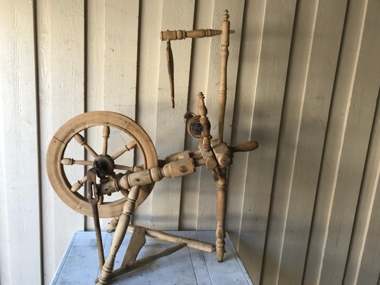

Tussedal museum har en større samling av kulturhistoriske gjenstander og foto. Visse samlinger blir stilt ut på permanent basis.
Folket i Tussedal har i lang tid hat en nær tilknyttning til dyr. Stikk innom museet for å se hvordan de har utnyttet dyrelivet de siste 200 årene.
Livet i Tussedal for 250 år siden
Næringslivet i Tussedal de siste 200 årene
Gjennom historien har folket i tussedal derevet med diverse transportnæringer. Stikk innom museet for å se den fulle utstillingen og for å si hei.